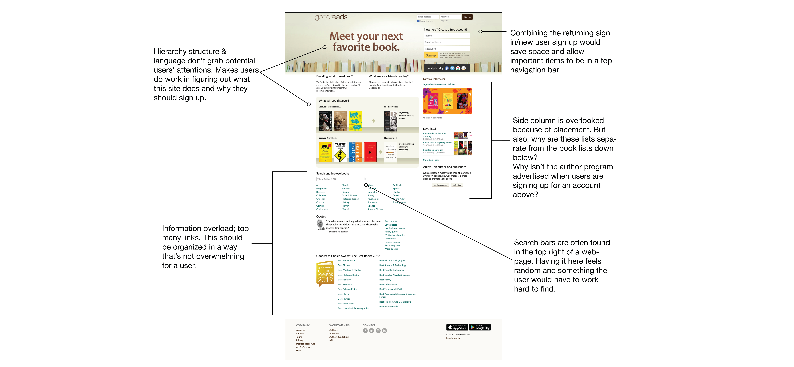
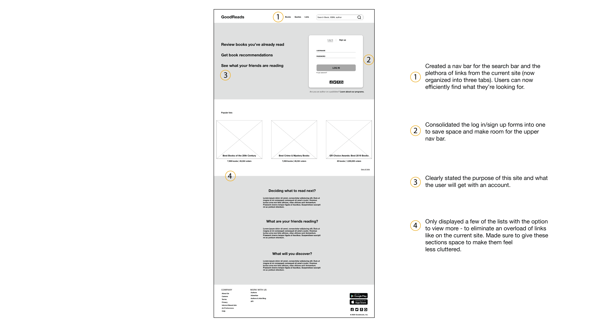

OVERVIEW
This was a quick, self-initiated exercise with the goal of redesigning a webpage
to improve its user experience. I chose to redesign the Goodreads homepage, as I
personally found this site frustrating to use.
Timeline
August '20 (4-5 days)
Tools
Adobe XD, HTML/CSS
Role
UX Designer
PROBLEM
Goodreads is a website for readers to track what they've read, connect with friends,
and discover what to read next. While the service is great, the landing page doesn't compel
a potential user to make an account.
The current homepage for Goodreads (see below) is outdated, overwhelming, and makes it difficult for
users who are interested in making an account to access information efficiently.

DESIGN
Wireframe
The goal of the new design is to keep the page simple and easy to navigate while clearly conveying
the service provided to promote user acquisition.

SOLUTION
I was unable to find brand guidelines, so I based the color palette/logo/fonts off of the
current site. After creating the final mockup, I took this project a step further by
coding a simple demo site.

REFLECTION
In an actual redesign, I would need user research + interviews before embarking on
any changes. However, this was intended to just be a quick exercise to practice my design skills. A lot of my
previous projects have been focused on building things from scratch so it was fun to work with the constraints
of an existing brand, although brand guidelines would've been helpful for visual elements.